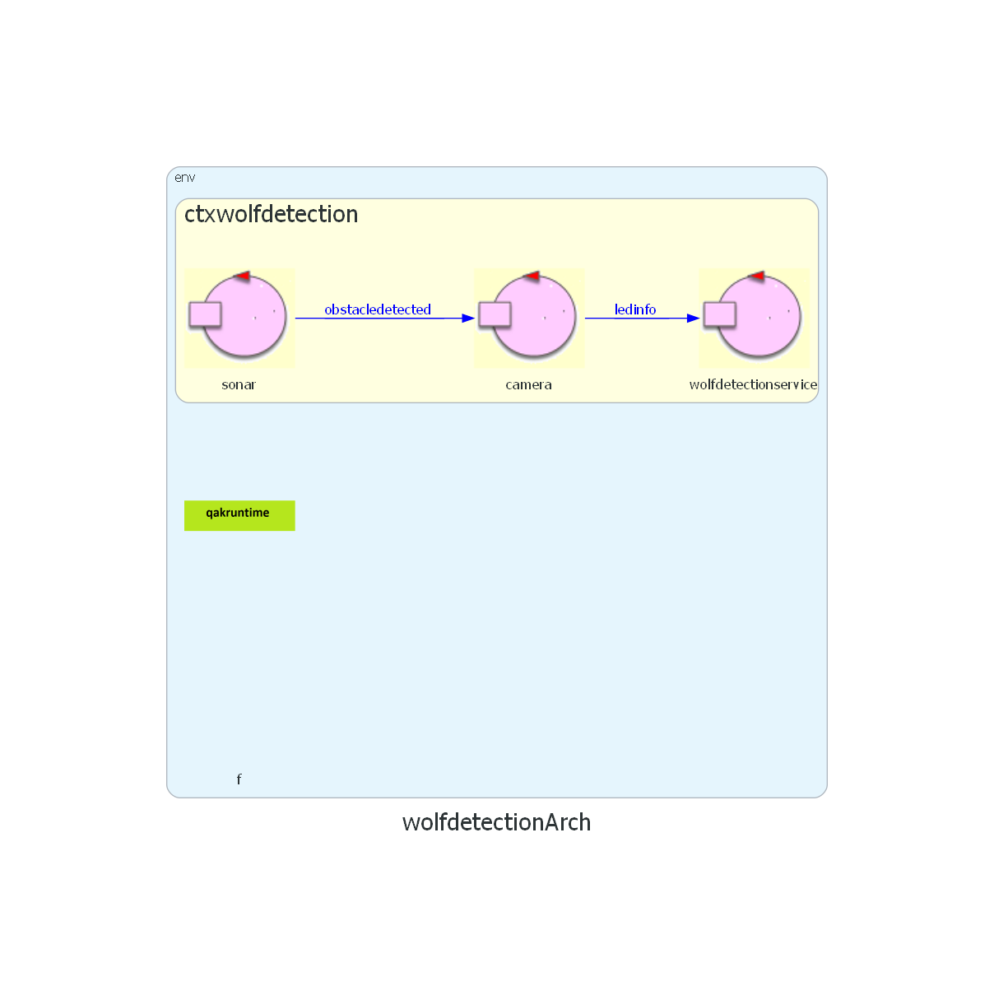

| Wolf Detection | il servizio che si richiede di progettare |
| Led | il sistema comprende due Led, uno rosso e uno blu |
| DMIN | distanza minima di rilevamento di un ostacolo |
| Sonar HC-SR04 | dispositivo connesso ad un Raspberry Pi
|
| Fotocamera | scatta una foto dell'ostacolo rilevato dal sonar e la invia ad un elaboratore per stabilire se l'ostacolo sia o meno un lupo |
Il committente fornisce
Per realizzare un primo modello del sistema sulla base delle analisi, si sceglie di utilizzare il linguaggio di modellazione Qak fornito dal committente. Il metamodello
L'architettura del sistema è la seguente:

Il sistema é costituito da un contesto:
Dispatch obstacledetected :
obstacledetected( DISTANCE ) alla camera quando rileva un ostacoloupdateResource [# "ledinfo(blue led on)" #] per accendere il
updateResource [# "ledinfo(red led on)" #] per accendere il Dispatch obstacledetected dal sonar